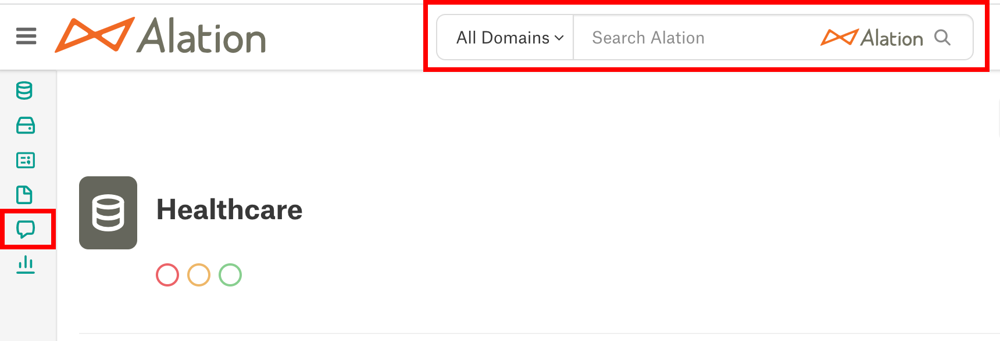
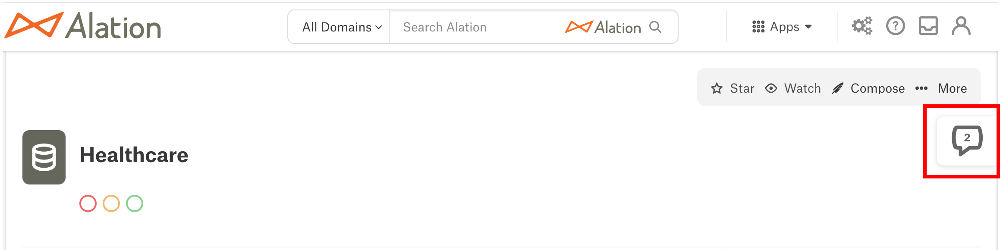
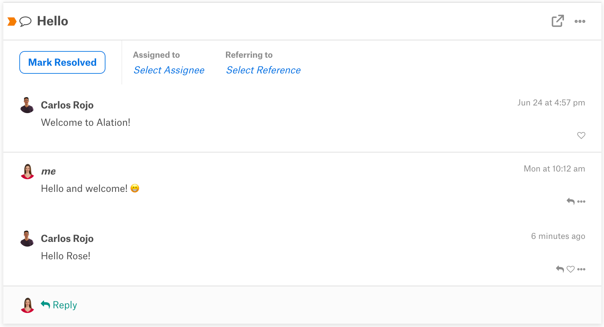
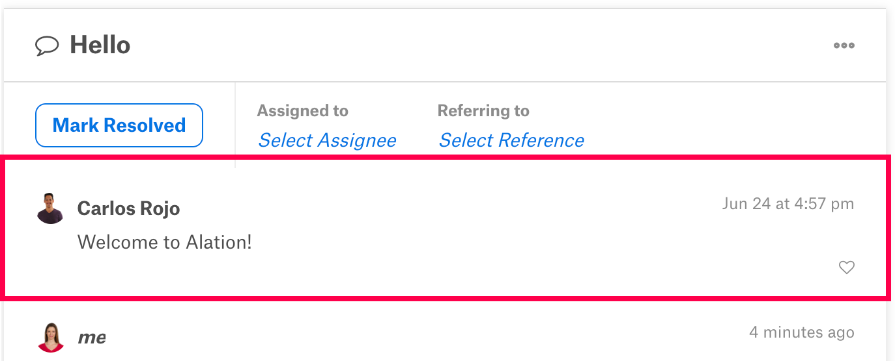
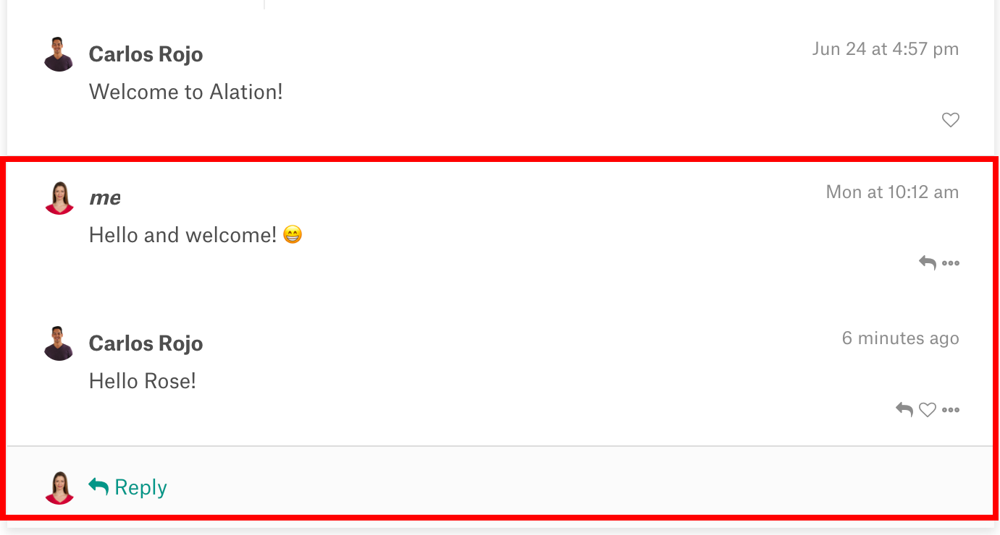

Conversations¶
Alation Cloud Service Applies to Alation Cloud Service instances of Alation
Customer Managed Applies to customer-managed instances of Alation
All Alation catalog users can initiate discussions about data through the Conversations feature. Conversations allows you to:
Ask questions about catalog objects.
Address them to experts.
Leave a record of your discussion for future users.
Alation promotes visible, real-time dialogues within the data context by saving all Conversations in a publicly-viewable format, integrating Conversations in multiple areas of the Alation data catalog interface, and linking Conversations to catalog objects.
Publicly-Viewable Format¶
The Conversations feature saves every individual Conversation as a catalog page to prevent user knowledge from getting buried in a private communication channel. Just like other object catalog pages, all Conversations are searchable, and no Conversation can be hidden from user view. You can use this permanent record of past Conversations to easily discover expert knowledge instead of creating a redundant Conversation.
Integration in the Catalog Interface¶
By using one of the three methods listed below, Alation users can access Conversations from any page within the catalog.
Catalog Search¶
You can search all Conversations in the catalog using the Conversations panel in the left sidebar or the search box. These features are available on any catalog page and can be seen in the screenshot below.
The Conversations Slideout¶
If you are on an object’s catalog page, you can open the Conversations slideout by clicking its tab on the right side of the page. From the slideout, you can view Conversations about the catalog object or start a new Conversation.
Your Inbox¶
You can view and manage the Conversations you’re participating in by accessing your Inbox. Alation allows you to open your Inbox from any catalog page by clicking the My Inbox icon in the top toolbar.

Integration with Slack¶
Applies to 2023.3 and newer
Applies only to Alation Cloud Service on the cloud native architecture
If you have the Alation Anywhere for Slack integration, you can interact with Alation Conversations inside Slack. See Alation Anywhere for Slack for more information.
Links to Catalog Objects¶
The Conversations feature allows users to connect a Conversation and a catalog page through the Referring to field or @-mentions in the body section. When you use one of these functionalities to select a catalog object, Alation embeds a link to the object’s catalog page inside the Conversation. At the same time, the Conversation appears in the Conversations slideout on the object’s catalog page.
This two-way connection makes it easy for future users to answer their questions by examining past Conversations in the slideout. Experts assigned to the Conversation can also access the relevant catalog page from the Conversation in order to provide a more informed answer.
Conversation Components¶
Every Conversation within Alation contains five essential components. All five components can be seen on a published Conversation page.
Subject¶
In the screenshot above, the Conversation’s subject is displayed in bold in the upper-left corner. The subject component indicates the Conversation’s topic in a short phrase, a lot like the subject line of an email.
In the Alation data catalog, a Conversation’s subject is crucial to future user discovery. The Conversations panel within the left sidebar lists the catalog’s Conversations by subject. Users can discover Conversations relevant to them by scrolling through this list or entering text in the Filter this list box. They can also search for Conversations by subject with the search box in the top toolbar.
Because the subject helps future users discover Conversations, Alation requires that every Conversation include subject text before it can be published to the data catalog.
Assigned to¶
The Assigned to field is displayed below the subject line and to the right of the Mark Resolved button. It helps users to ensure that their Conversation is visible to a subject matter expert.
Starting in 2023.3, you can choose multiple users or groups as the Conversation’s assignees. In earlier versions, you can only assign a single user.
Assignees receive a notification in their Inbox every time someone contributes to their assigned Conversation.
You don’t have to fill out the Assigned to field before publishing a Conversation, and any user viewing the Conversation can update the Conversation’s assignee.
Note
For more information about adding an assignee or changing a Conversation’s assignee, see Posting a New Conversation and Interacting with Conversations.
Referring to¶
The Referring to field functions very similarly to the Assigned to field and appears to its right in the screenshot. It enables you to note a catalog object’s importance to a Conversation by designating it as the Conversation’s reference.
When you select a reference, Alation embeds a link to the reference’s catalog page inside the Referring to field and inserts the Conversation into the catalog page’s Conversations slideout. This two-way connection helps future users to access relevant discussions and catalog pages regardless of the page they start on.
Like the Assigned to field, the Referring to field can only include one catalog object at a time. You’re not required to name a catalog object as a reference before publishing a Conversation, and any user can make changes to the Referring to field at any time.
Note
The Referring to field does not appear when you access a Conversation from the Conversations slideout on a catalog object page. Conversations inside a Conversations slideout always refer to the catalog page the slideout is located on.
For more information about adding a reference or changing a Conversation’s reference, see Posting a New Conversation and Interacting with Conversations.
Body¶
As shown above, the body section of a Conversation always appears below the subject line and the Assigned to and Referring to fields. The body section acts like the “original post” that replies to the Conversation follow. It includes information about the user who started the Conversation, the text they posted, and a time stamp from the moment that they started the Conversation.
The body section provides details that help future users understand the Conversation, and so it must include text before the Conversation can be published. Alation’s search feature also reflects this key role by including Conversations with relevant body content in search results.
The body section allows you to connect users and catalog pages to a Conversation with @-mentions. When you @-mention a catalog page, Alation embeds a link to the catalog page in the Conversation and places the Conversation inside the catalog page’s Conversations slideout. On the other hand, if you @-mention a catalog user, they will receive notifications about the Conversation in their Inbox.
The @-mentioning functionality behaves a lot like the Assigned to and Referring to fields, but it’s distinct from both of them. A Conversation can only be assigned to one user and referring to one catalog object at one time, but the Conversation’s body section can include an unlimited number of @-mentions.
Note
A similar @-mentioning functionality is also available in the body section of Articles.
For more information about adding an assignee or changing a Conversation’s assignee, see Posting a New Conversation and Interacting with Conversations.
Replies¶
A Conversation’s replies are displayed in a continuous thread directly below the body section, like in the screenshot above. Any user can reply to either the original post or another user’s comment. Like the body section of a Conversation, each reply provides information about the user who posted it, their posted text, and a time stamp. Replies are listed chronologically, with the first reply beneath the body content and the most recent response at the bottom of the reply thread.
The replies section of a Conversation provides a space for users to answer questions from the body content or post additional discussion points. Alation’s search feature allows users to easily find this content by including relevant Conversation replies in its results.
Next¶
Now that you’ve read about Conversations’ role inside the Alation data catalog and a Conversation’s main components, try these topics: